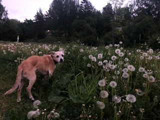

 Teimme Bilbon kanssa paljon kaikkea aina perus kävelylenkeistä pitkiin road-trippeihin ympäri Suomea. Bilbo tykkäsi nuuskia kaikki paikat aina tarkasti läpi. Oli kyseessä sitten ihminen, eläin tai kuvassa näkyvän pellon kukat, Bilbo nuuski kaiken iloisena.